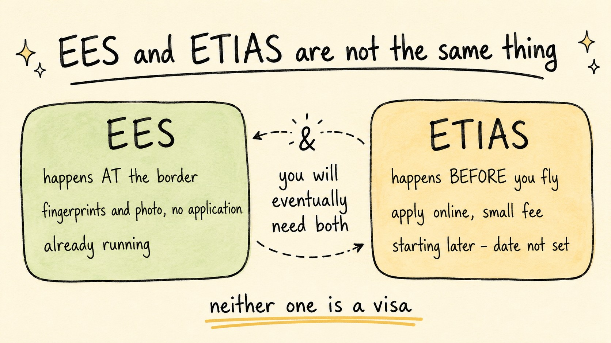

ETIAS: What Documents You Need and How to Apply
Travel Document Vault

Key Takeaways
- ETIAS is a digital travel authorisation for UK, US, and Canadian travellers - required for visa-exempt entry to the Schengen area once it becomes mandatory
- You need a passport valid for 3+ months beyond your departure date and an email address to apply
- Processing time varies, especially soon after launch; apply well ahead of your trip and check the official EU site for current guidance
- Check the official EU site for the current fee; under-18s and over-70s don't pay but still need authorisation
- Common rejections happen for undisclosed criminal records or previous overstays - plan accordingly
You've booked a family trip to Italy and you've heard that ETIAS is on its way - a new digital authorisation requirement for visa-exempt visitors to Europe. This guide covers what ETIAS is, what documents you need, and how the application works, so you're prepared before you reach the form.
The European Travel Information and Authorisation System (ETIAS) is not a visa - it's a digital pre-travel clearance for visitors from visa-exempt countries. If you're a UK, US, or Canadian citizen, you currently arrive in Europe, scan your passport, answer a few border questions, and pass through. Once ETIAS becomes mandatory, that process moves online - you apply before you fly.
What Is ETIAS and Who Needs It?
ETIAS is a digital authorisation system designed to strengthen border security and travel management across the Schengen area. It applies to citizens of visa-exempt countries - meaning countries whose nationals can currently enter Europe without a visa for short stays. This includes the UK, USA, Canada, Australia, New Zealand, and dozens of others.
If you hold a visa such as a Schengen long-stay visa, UK family visa, or other residence permit, you won't need ETIAS - nor will EU citizens, Norwegian, Icelandic, and Liechtenstein nationals. Children under 18 and adults over 70 are exempt from the fee but still require authorisation at no cost.
ETIAS affects a wide range of travellers: individual holidaymakers, families applying separately for each member, and digital nomads planning repeated short stays. Remember that every person in your family needs their own ETIAS application - including children and older adults, who require authorisation even though they are exempt from the fee.
Required Documents and Information for Your Application
Unlike traditional visas, ETIAS requires no physical document submission - you apply entirely online instead. However, you'll need to have specific information ready before you start the application form.
Your passport must be valid for at least three months beyond your intended date of departure from Europe. It's an easy trap to fall into: a passport expiring on 30 December looks fine for a trip departing 1 December, but most countries require the full three-month buffer to count it as valid. Beyond that validity window, it also needs to be a standard adult passport from a recognised country, not a travel document or emergency passport.
You'll also need to provide an email address, which doubles as your login for tracking the application. ETIAS sends all status updates, approvals, and rejections to this inbox, so use one you check regularly. If your family shares email accounts, it's worth setting up individual addresses for each traveller to avoid missing critical notifications.
During the application you'll need to provide your travel history, including any previous trips to Schengen countries - dates, destinations, and duration - though exact dates aren't always necessary. What matters is providing consistent, approximate timeframes, which helps prevent rejections when the system cross-checks your information.
ETIAS will ask for security and personal information - your full name, date of birth, place of birth, nationality, and contact details - alongside questions about any criminal convictions or previous visa overstays. Honesty matters here: false information is grounds for permanent rejection and can trigger deportation bans.
Proof of income is optional - recent pay slips, bank statements, or tax returns all count. The European Commission doesn't mandate it, but including it can strengthen a borderline application and reduce the risk of rejection.
Many applicants mistakenly assume they need vaccination records, hotel bookings, or return flight confirmations. ETIAS does not require these at the application stage. You may need them for border inspection, but ETIAS approval does not depend on them.
The ETIAS Application Process: Step by Step
Once you've gathered your information, the application itself is straightforward. Visit the official ETIAS portal and start a new application - no full account needed, just an email address and a temporary password.
The form asks for your personal details (name, date of birth, nationality), passport information (number and validity date), and your travel plans (intended destination and stay duration). Be precise: if you plan to visit three countries, list all three. If you're unsure about exact dates, use approximate month ranges - inconsistency is what triggers rejections, not approximate dates.
Next, you'll answer security questions covering criminal history, previous deportations, visa overstays, and involvement in terrorism or extremism - questions designed to catch security risks. If you need to answer "yes" to any of these, the optional notes section is where a good explanation can help. For instance, if you were previously refused a visa because of a misunderstanding, a brief clarification can shift the outcome.
What about health? You'll be asked whether you have an infectious disease or another condition that poses a public health risk. That's different from travel insurance's medical requirements - ETIAS is focused on disease control, not your individual health status.
At the end, you review your information, pay the fee shown at checkout (free if under 18 or over 70), and submit. A confirmation number is generated immediately, and your application enters the processing queue.
Processing Time and Outcome Types
The European Commission publishes current processing time guidance on its official site, and it's worth checking that before you assume you have time. Early demand after launch, background check delays, and any need to fix a rejection can all add to the wait, so apply as early as you reasonably can before your trip.
There are three possible outcomes: approved, rejected, or refusal to authorise.
An approval means you're granted a digital ETIAS linked to your passport number - there's nothing to print or carry, since the system will recognise you automatically at the border. Your approval remains valid for three years, or until your passport expires, whichever comes first.
A rejection typically stems from incomplete or inconsistent information - missing travel dates, conflicting employment history, or unclear answers all trigger this outcome. You can reapply immediately to fix the issue, with no waiting period, since these are easily correctable mistakes.
A refusal to authorise is more serious, occurring when ETIAS security checks uncover criminal convictions, previous Schengen overstays, or other security concerns. You can technically reapply immediately if your circumstances change, but successful reapplication is unlikely once a refusal is security-based. In practice, you'll generally need to apply for a long-stay visa through an embassy instead - visa-exempt travel to Schengen countries is off the table once you've been refused.
Travel Document Vault tracks every family member's ETIAS approval, passport expiry, and visa deadlines in one encrypted vault. Scan a passport once and the app reads the expiry automatically, then set reminders at 30, 90, or 180 days before any document expires. Download on the App Store and Google Play.
Common Rejection Reasons and How to Avoid Them
The most frequent ETIAS rejections come down to inconsistencies in travel history and incomplete information - here are the ones worth watching for.
Undisclosed criminal convictions: If you have a criminal record and don't disclose it but ETIAS finds it during a background check, your application is refused rather than rejected - a meaningful distinction. Always disclose, even if the conviction is old or has been expunged in your home country, because European authorities may still retain records. A security-based refusal is very difficult to overturn unless your circumstances change dramatically.
Previous overstays: if you've overstayed a visa in Europe or elsewhere, ETIAS will flag it. Come prepared with a brief explanation in the optional notes field - something like "Emergency family matter delayed departure; resolved with authorities" can help your case, though some overstays trigger refusal regardless of justification.
Conflicting travel history: ETIAS will detect inconsistencies, like claiming a short trip to France when your entry and exit dates suggest a much longer stay. If you don't remember exact dates, it's better to estimate conservatively, or say plainly that you're approximating, rather than risk a contradiction.
Unclear employment or income: flag any gaps or inconsistencies, such as travel dates that suggest you were working abroad without saying so, or unexplained gaps in your employment history. Use the optional notes section to clarify. ETIAS won't reject you for being unemployed, but unexplained inconsistencies will raise suspicion.
To avoid rejection, review your information carefully before submitting. If anything is uncertain, use the optional notes field to explain - a brief, honest explanation prevents far more rejections than trying to hide information.
Special Cases: Children, Family Groups, and Re-entry After Refusal
Children under 18 don't pay the ETIAS fee but should still apply for authorisation, with parents applying on their behalf. One future change worth watching: biometric checks at the border may eventually require children to be present in person.
Family groups must submit each application separately rather than as a single "family" unit. You can note that you're travelling as a family in the travel details section, though, and that note may help if one member's application is flagged for review.
If you're refused and still need to travel, your fallback is applying for a traditional long-stay visa through the relevant embassy or consulate, which typically allows multiple entries and longer stays than visa-exempt travel. Since requirements vary by destination and nationality, contact the embassy directly to find out what you'll need.

ETIAS Alongside Other Travel Documents
ETIAS approval does not replace your passport, travel insurance, or passport validity requirements. You still need:
- A valid passport (3+ months validity)
- Travel insurance covering medical emergencies and repatriation
- Proof of onward travel (return flight or onward ticket)
- Proof of accommodation or travel itinerary
- Sufficient funds for your stay
Border officers may still request any of these documents upon arrival, even with a valid ETIAS, since ETIAS merely speeds up the authorisation process rather than exempting you from standard border inspection and documentation requirements.
Before you rely on this: it's a blog, not an official source. Rules and details change, and your situation may be different. We check what we publish, and we can still be wrong or out of date. If something here matters to your plans, confirm it with the authority that handles it before you act.
Frequently Asked Questions
When does ETIAS become mandatory for European travel?
ETIAS has not yet been made mandatory, and the timetable has shifted several times. The Entry-Exit System (EES) is rolling out first, with ETIAS expected to follow once EES is established. There may be a transitional period where ETIAS operates in parallel with passport stamps. Check the official EU site for the current position, and apply several months before your planned travel to account for processing and rollout delays.
Who needs to apply for ETIAS?
ETIAS is required for visa-exempt non-EU citizens travelling for short-stay visits (up to 90 days in 180 days). Visitors from the USA, Canada, UK, and several other countries are included. Children under 18 and adults over 70 do not pay but still require authorisation. EU residents and those with long-stay visas do not require ETIAS.
What documents do I need to apply for ETIAS?
You must have a valid passport with at least three months validity beyond your intended departure date. You will also need an email address. Optionally, proof of income (pay slip, bank statement, or tax return) is recommended but not always required. No physical documents are submitted - everything is uploaded digitally or entered into the online application.
How much does ETIAS cost and how long does it take?
The European Commission publishes the current ETIAS fee on its official site. Children under 18 and applicants over 70 do not pay, though they still need authorisation. The fee is non-refundable even if your application is rejected. Processing time varies, especially during the initial launch phase, so check the official guidance and apply well ahead of your trip rather than close to your departure date.
What happens if my ETIAS application is rejected?
If rejected due to incomplete or inconsistent information, you can reapply immediately with corrected details. If refused due to security grounds (criminal convictions, overstays, or other serious concerns), you can reapply at any time, though approval is unlikely unless circumstances change significantly. Common refusal reasons include undisclosed criminal convictions or previous overstays. You will receive a notification explaining the reason. If resolvable (such as updated travel information), address it and reapply. If security-based, you may need to seek a long-stay visa instead.
Can I travel to Europe before ETIAS launches?
Yes. ETIAS is not yet mandatory. While ETIAS is not yet required, visa-exempt travellers can continue to use current border procedures - passport scan, verbal declaration, and inspection. Once ETIAS becomes mandatory, all future trips will require prior authorisation. Check the official EU site before booking to confirm the current position.